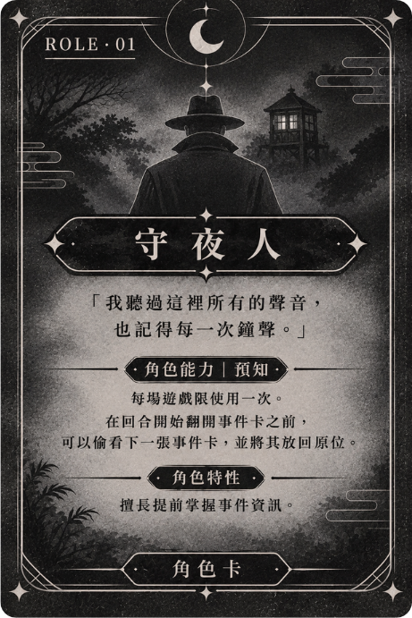

03 / CHARACTER ARCHIVE
選擇你的角色
點擊下方角色卡牌，查看角色資訊與特殊能力。

SELECTED CHARACTER
守夜人
角色能力｜預知
每場遊戲限使用一次。 在回合開始翻開事件卡之前， 可以偷看下一張事件卡，並將其放回原位。
角色特性
擅長提前掌握情報。
ROLE 01
四種角色各自具有一項特殊能力， 協助團隊蒐集情報、調查規則、探索線索與支援隊友。
點擊下方角色卡牌，查看角色資訊與特殊能力。

每場遊戲限使用一次。 在回合開始翻開事件卡之前， 可以偷看下一張事件卡，並將其放回原位。
擅長提前掌握情報。